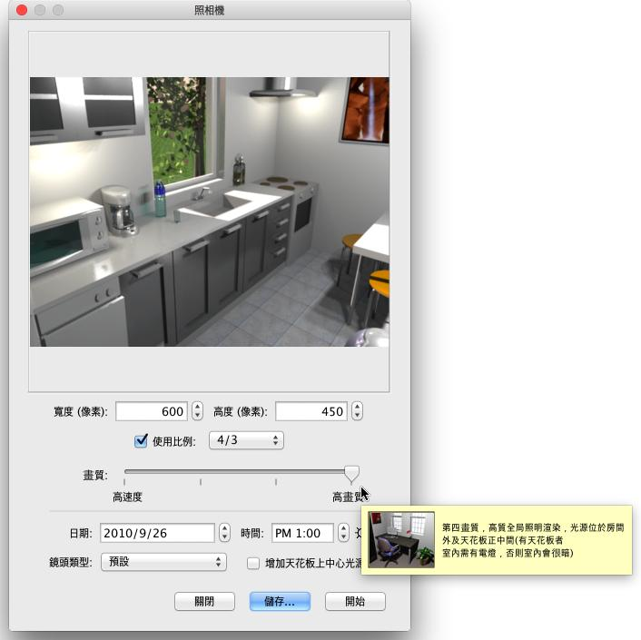
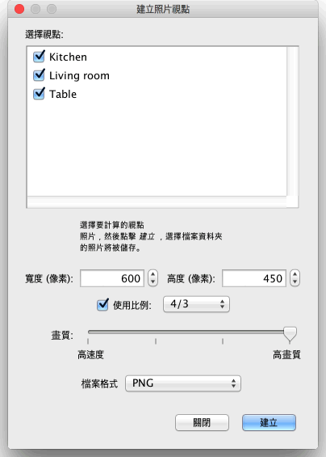

| 產生照片 | |||
建立Sweet Home 3D 圖像或照片, 選擇 3D 視圖→產生照片... 選單項目或點在所選要 產生的照片 工具.
這將展示表現尺寸，質量的下列對話方框,以及儘可能在景象產生期間被設定， 隨後 產生 設定按鈕去計算渲染景象後並 儲存... 按鈕讓您的照片可以儲存所示的照片, 或再一次計算渲染.  若景象尺寸的預設值不能滿足您的要求,您也可以選擇一種不同寬和高的尺寸，當您 選擇 景象的高會自動更新照片的比例寬度,
去滿足您所要的照片尺寸， |
|
|||||||||||||


在二種最好質量品質，渲染圖像是依賴燈光的位置和強度，預設值是在每間 房間的天花板中央自動增加燈光，若您要控制好燈光的強弱在您的家， 盡可能不需檢查方塊中的增加天花板的燈光，增加目錄中電燈 的種類於平面圖，及調整所提供的燈光強弱只是器，或就藉由編輯或自訂義傢俱 太陽的光線、顏色，並且指示它的射線點依靠這個季節和被選擇的日期，而且還有在這指北針指示，這地理位置和時區上，最後參數是藉由羅盤 對話方塊的管理，一幅圖像的全球亮度也倚賴光的亮度水準去設定在自訂義3D視圖或修改的對話方塊。 最後，這產生照片對話方塊能讓您可以有以下四種不同鏡頭的選擇：
如果您想要計算一組照片在同一個批次處理中，存儲您想要的視點3D 視圖→存儲的角度...功能表項目，然後選擇3D 視圖→創建照片在視點...功能表項目。 它將顯示一個對話方塊，計算之前，會讓您選擇的大小、 圖像品質和計算圖像的檔案格式，並將其儲存在您選擇的資料夾中。在兩個最佳品質級別，日期/時間和用於給定呈現的角度來看的鏡頭，將上次您存儲或修改這種視點在創建照片窗格中輸入的值。如果你永遠不會打開創建照片窗格中，或更改該面板中的日期/時間、日期/時間，創建編輯時在家的一天當中的中午。  |


|